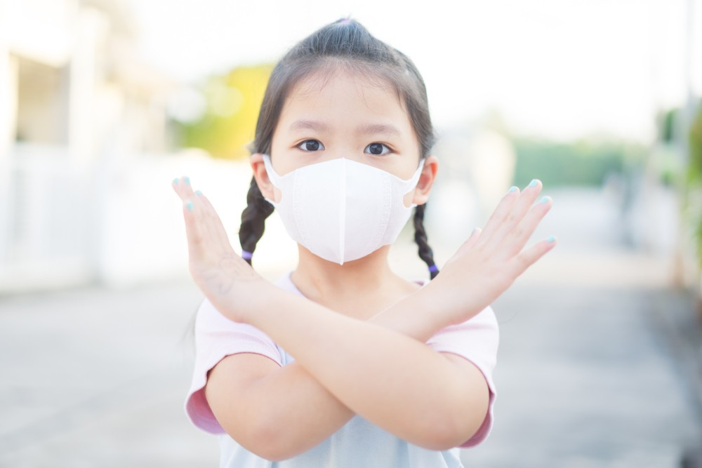

Pandemi Covid-19 membuat berbagai negara di belahan dunia mengalami kepanikan. Bagaimana tidak, hingga saat ini belum ada vaksin ataupun obat yang terbukti efektif dalam mengobati penyakit tersebut.
Bahkan penyakit Covid-19 telah menginfeksi lebih dari satu juta orang di seluruh dunia. Badan Kesehatan Dunia (WHO) serta Pusat Pengendalian dan Pencegahan Penyakit (CDC) pun mengeluarkan imbauan mengenai hal yang harus dilakukan dalam mencegah corona jenis baru ini. Apa saja itu?
Berikut cara pencegahan virus corona
1. Rutin mencuci tangan
Jika sebelumnya, Anda hanya mencuci tangan dengan air saja maka hentikan kebiasaan tersebut. Rutinlah mencuci tangan dengan sabun dan air mengalir selama minimal 20 detik. Pastikan Anda membersihkan seluruh tangan, termasuk jari, sela-sela jari, dan juga ujung kuku.
Bila tak ada sabun dan air, maka Anda bisa menggunakan hand sanitizer yang mengandung sekitar 60% alkohol. Mencuci tangan dengan sabun dan air atau pembersih tangan berbasis alkohol dapat membantu membunuh virus yang berada di tangan Anda.
2. Physical distancing
WHO telah resmi mengubah frasa social distancing menjadi physical distancing. Frasa physical distancing dirasa lebih pas karena bukan dimaksudkan untuk menjaga jarak sosial, melainkan menjaga jarak fisik. Oleh sebab itu, disarankan untuk menjaga jarak setidaknya 1 meter dari orang lain.
Sebab jarak yang terlalu dekat memungkinkan Anda menghirup tetesan air dari hidung atau mulut orang yang mungkin terinfeksi Covid-19 ketika ia bersin atau batuk. Imbauan tersebut juga telah disampaikan oleh pemerintah Indonesia.
3. Hindari memegang mata, hidung, dan mulut
Memang bukan perkara yang mudah untuk tidak memegang apa yang ada di wajah karena sudah menjadi kebiasaan setiap hari bagi kebanyakan orang. Akan tetapi, untuk melindungi diri dari virus corona baru, hindari memegang mata, hidung, dan mulut.
Hal tersebut bukan tanpa alasan, sebab tangan umumnya menyentuh banyak permukaan yang mungkin terdapat virus. Setelah virus tersebut menempel pada tangan, maka tangan pun bisa memindahkan virus ke mata, hidung atau mulut ketika Anda menyentuhnya. Dari sanalah, virus masuk ke dalam tubuh dan menyebabkan Anda sakit.
4. Ketika bersin dan batuk, jangan lupa tutup
Ketika bersin dan batuk, umumnya orang-orang akan refleks menutup dengan telapak tangan. Padahal itu merupakan hal yang keliru. Tutuplah menggunakan siku bagian dalam karena area tersebut jarang tersentuh sehingga mengurangi risiko penularan virus. Selain menggunakan siku bagian dalam, Anda juga bisa menggunakan tisu namun pastikan buang bekasnya dengan segera ke tempat sampah.
5. Tetap di rumah
Meski tak merasakan gejala apa pun, namun Anda bisa saja menjadi carrier dan menularkan virus corona ke orang lain. Ketika virus tersebut menginfeksi orang yang sistem kekebalan tubuhnya lemah, maka bisa menyebabkan Covid-19. Oleh sebab itu, imbauan untuk tetap #dirumahaja pun sedang digalakkan sebagai upaya mencegah penyebaran virus corona baru tersebut. Bahkan Presiden pun meminta masyarakat untuk belajar di rumah, bekerja di rumah, dan beribadah di rumah.
6. Bersihkan permukaan yang sering disentuh
Bersihkanlah permukaan yang paling sering disentuh, seperti halnya meja, gagang pintu, keyboard, toilet, handphone, keran air, dan lainnya menggunakan disinfektan. Jika permukaannya kotor, maka sebelum melakukan disinfeksi, bersihkan terlebih dahulu dengan detergen atau sabun dan air. Disinfektan dipercaya dapat membunuh virus yang menempel pada permukaan.
7. Cari tahu informasi akurat mengenai Covid-19
Penting untuk mencari informasi yang akurat mengenai perkembangan Covid-19. Ikuti saran yang diberikan oleh penyedia layanan kesehatan tentang cara melindungi diri sendiri dan orang lain dari penyakit tersebut. Ini membantu Anda lebih waspada dan memahami apa yang seharusnya dilakukan di tengah pandemi ini.
Carilah berita-berita yang tidak memberikan stigma negatif. Hal ini juga dapat membantu memutus mata rantai Covid-19.
Dengan melakukan berbagai langkah sederhana tersebut, Anda sudah melindungi diri sendiri dan orang lain dari ancaman virus corona baru. Bukan hanya itu, Anda juga ikut andil dalam menekan angka corona di Indonesia. Jadi, tidak sulit untuk dilakukan bukan?
Kembali ke Halaman sebelmunya